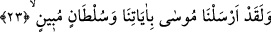
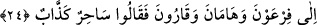

Mesnevi’den:
Peygamber der ki: “Öne geçmiş şeyh,
Kendi toplumunda peygamber gibidir.”
Şüphesiz Allah, düşmanlarından, dostlarının intikamını alacak kadar güçlüdür.
Düşmanlarından intikam alırken cezalandırması da şiddetlidir.
Zerrûkî’nin Şerhu’l-esmâ’sında şöyle der: “el-Kavî” ne zâtında ne sıfatlarında ne de
fiillerinde kendisine asla zayıflık bulaşmayan demektir. Kavî’ye asla bir yorgunluk ve
bıkkınlık gelmez. Kavî için bir şeyi yaparken ya da bozarken hiçbir kusur ve acziyet söz
konusu değildir. Sadece Allah Teâlâ’nın böylesine kuvvetli olduğunu bilen biri bütün
güç ve kuvvetini bir kenara bırakıp Allah’a döner. Bu ism-i şerîfin husûsiyeti, varlıkta
kuvvetin ortaya çıkmasıdır. “el-Kavî” ismini okuyan zayıf himmetli biri mutlaka güç
bulacağı gibi, bedenen zayıf olan biri de bu isim sâyesinde güç kazanır. Zulme uğramış
biri, zâlimin helâk olması için bu ismi bin kez okursa istediği gerçekleşir.
23. Andolsun ki biz Mûsâ’yı mûcizelerimiz ve apaçık hüccetle gönderdik.
“Andolsun biz Mûsâ’yı” dokuz mûcizeden ibaret olan mûcizelerimiz ve”
karşısındakini perişan eden asâ gibi “apaçık bir hüccet ile” birlikte “gönderdik.”
Dokuz mûcizeden biri olmasına rağmen “asâ” mûcizesini, şânını yüceltmek için,
özellikle tek olarak zikretmiştir. Bu tür bir atıf, hususînin umumîye atfedilmesi
kabilindendir.
24. Firavun, Hâmân ve Kârun’a. Onlar: Bu, çok yalancı bir sihirbazdır! dediler.
Mısır Amâlikasının en büyüğü olup da tanrılık iddiasında bulunmuş olan
“Firavun’a,” onun veziri olan “Hâmân’a.” Sadece bu ikisini zikretmiştir. Çünkü
Mûsâ’nın bu ikisine gönderilmesi, bizzat bütün kavme gönderilmesi anlamındadır. Zira
bütün bir kavim hükümdar ile vezirinin taht-ı tasarrufundadır, onlara tâbidir. ”İnsanlar
ise hükümdarlarının dinleri üzere bulunurlar.” “Ve Kârun’a.” Kârun da mal ve
servetinin çokluğundan dolayı hükümdar konumunda bulunduğu için özellikle
zikredilmektedir. Şüphesiz Mûsâ’nın Kârun’a gönderilmesi Firavun’la Hâmân’a
gönderilmesinden çok daha sonradır. Çünkü o İsraîloğulları’ndan olup Hz. Mûsâ’nın
amcazâdesi idi. Başlarda Müslümandı. İsrailoğulları’nın en bilgilisi idi. Tevrat hâfızı